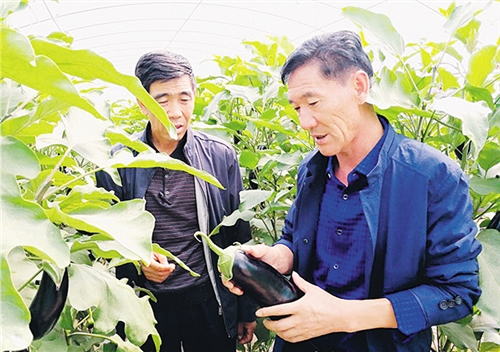

首页>>代表风采
胡中山：产业扶贫“领头羊”

——记党的十九大代表、甘肃古浪县黄花滩生态移民后续产业专业合作社党委书记胡中山
“找块平坦的地方，让娃娃们上学近一点，老人们看病方便些。”这是1996年，时任甘肃古浪县井泉乡夹山岭村党支部书记的胡中山带领48户乡亲下山找出路的初衷。
他带着大家来到了腾格里沙漠边缘的黄花滩，这里虽然平坦，却是一片荒滩。“没有房，没有地，没有水，要想扎根就得从头干。”胡中山带领群众打井修渠、整地架电、造林修路，“总算安了家，生活环境比山上好，但经济收入只能维持生活。”
他开始琢磨，怎么让乡亲们富起来呢？2007年，随着石羊河流域重点治理的推进和政府扶持设施农牧业政策的实施，胡中山敏锐地意识到，这是带领全村群众迈上致富路的难得机遇，于是他果断提出了黄花滩村户户建温棚、家家搞种养的脱贫致富的想法。
2009年开始，胡中山挨家挨户动员村民，让大家调配土地，搞人畜分离的规模养殖和温室种植。没有启动资金，胡中山靠个人信誉赊欠了价值270万元的建筑材料，帮乡亲们建起了84栋养殖暖棚和172亩的日光温室。有了棚，没钱种、没钱养，胡中山又学习政策，四处联系，通过多户联保、妇女小额贷款等渠道，协调来了1200万元的贷款。
经过一年的努力，黄花滩移民村的养殖暖棚和日光温室实现了当年见效，并顺利还了270万元的欠款，3年后还清了所有贷款。看到下山的村民们能脱贫致富，越来越多的人从山上搬下来了。
如今的黄花滩，早已不是当年黄沙遍地、植被稀疏的荒滩。从定武高速土门出口下来后，放眼望去，黄花滩生态移民安置区内公路四通八达，白墙彩瓦的房屋整齐排列。驱车前行，只见温棚并排而立，路旁林木绿荫葱郁，学校里书声琅琅、广场上笑语阵阵，5万多名从大山深处搬迁下来的群众，圆了他们的脱贫致富梦。
2013年，胡中山开始担任黄花滩生态移民后续产业专业合作社的党委书记。“养羊、种大棚，看起来简单，但是要想挣钱，就得下细功夫，从建棚到种植、养殖，每一道工序都不能马虎。”为了让移民群众脱贫致富，胡中山出了温室进羊棚，一心扑在移民脱贫致富的事业上。
在他和合作社党委的带领下，目前在黄花滩生态移民安置区根据不同的种植养殖品种划分了功能区，已有各类种植养殖专业合作社32个，牛羊交易市场一年交易额达4亿元，建成养殖暖棚7300多座，今年底日光温室将达到4000座。